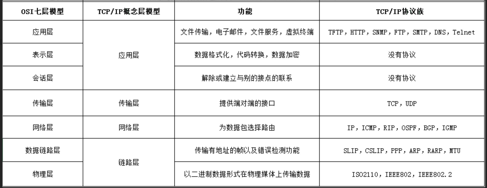
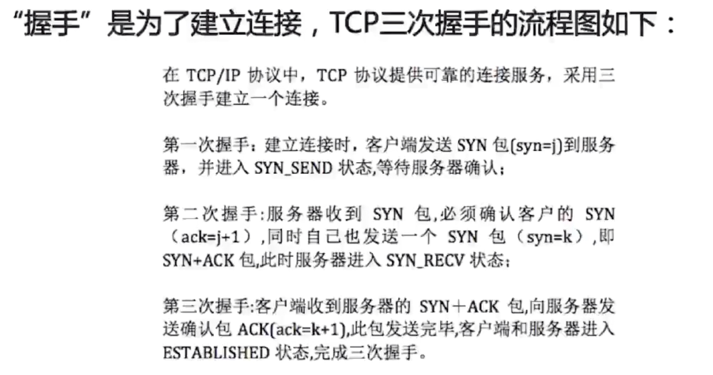
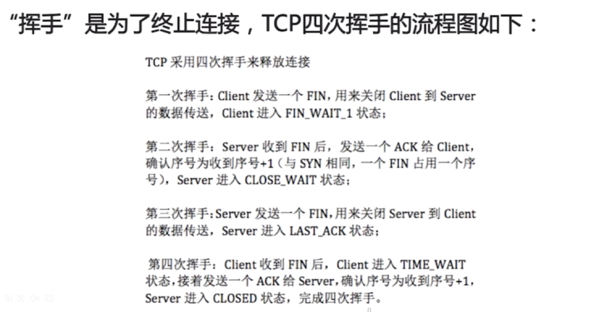
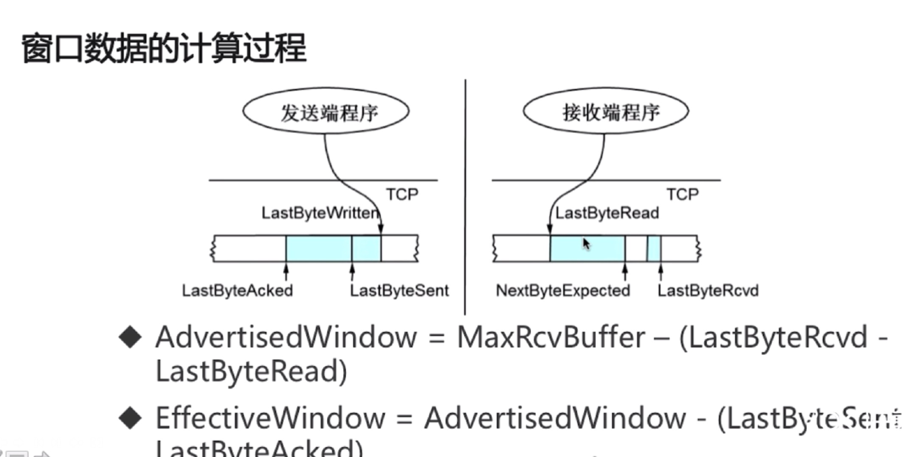
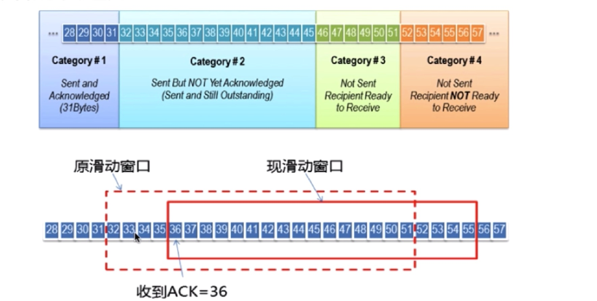

网络相关
OSI (Open System Interconnection Reference Model) 7层模型
一个试图使各种计算机在世界范围内互连为网络的标准框架

第7层 应用层
应用层（Application Layer）提供为应用软件而设的接口，以设置与另一应用软件之间的通信。例如: HTTP，HTTPS，FTP，TELNET，SSH，SMTP，POP3等。
第6层 表达层
表达层（Presentation Layer）把数据转换为能与接收者的系统格式兼容并适合传输的格式。
第5层 会话层
会话层（Session Layer）负责在数据传输中设置和维护计算机网络中两台计算机之间的通信连接。
第4层 传输层
传输层（Transport Layer）把传输表头（TH）加至数据以形成数据包。传输表头包含了所使用的协议等发送信息。例如:传输控制协议（TCP）等。
第3层 网络层
网络层（Network Layer）决定数据的路径选择和转寄，将网络表头（NH）加至数据包，以形成分组。网络表头包含了网络数据。例如:互联网协议（IP）等。
第2层 数据链路层
数据链路层（Data Link Layer）负责网络寻址、错误侦测和改错。当表头和表尾被加至数据包时，会形成帧。数据链表头（DLH）是包含了物理地址和错误侦测及改错的方法。数据链表尾（DLT）是一串指示数据包末端的字符串。例如以太网、无线局域网（Wi-Fi）和通用分组无线服务（GPRS）等。
分为两个子层：逻辑链路控制（logical link control，LLC）子层和介质访问控制（media access control，MAC）子层。
第1层 物理层
物理层（Physical Layer）在局部局域网上传送数据帧（data frame），它负责管理计算机通信设备和网络媒体之间的互通。包括了针脚、电压、线缆规范、集线器、中继器、网卡、主机接口卡等。
TCP/IP 对应 OSI 模型
可以把 tcp/ip 协议族 看做对 OSI的实现

TCP
- 面向连接的、可靠的、基于字节流的传输层通信协议
- 将应用层的数据流分割成报文段并发送给目标节点的TCP层
- 数据包都有序号，对方收到则发送ACK确认，未收到则重传
- 使用校验和来检验数据在传输过程中是否有错误
SYN FLOOD 攻击
syn flood 攻击是典型的 DoS (Denial of Service) 攻击。效果就是服务器TCP连接资源耗尽，停止响应正常的TCP连接请求
攻击原理: TCP连接需要经过三次握手，A作为客户端，B作为服务端， A向B发送 Syn 包，B需要向A发送 Syn+Ack 包，假设A发送了大量了Syn包但是不响应B发送的Syn+Ack包，服务端B则需要保持连接半开状态，并且会重试一定的次数才会放弃
TCP三次握手 <https://github.com/jawil/blog/issues/14>

TCP 四次挥手


TCP 滑动窗口
主要是为了保证 TCP的可靠性和流量控制
TCP 有一个 window 字段 用于 接收方通知发送方还有多少缓冲区可以接收数据，发送方根据接收方的处理能力来发送数据，不会导致接收方处理不过来
RTT
发送一个数据包到收到对应的ACK所花费的时间
RTO
重传时间间隔
如何计算 effective window 大小

滑动窗口原理
数据的4种状态
发送了且收到了ack确认的发送了但是没有收到ack确认的没法送但是准备发送的没发送但是已经达到滑动窗口大小，接收方不接收的

滑动窗口的大小就是 发送了但是未回复ack确认的数据长度
UDP
- 面向非连接
- 不维护连接状态， 支持同时向多个客户端传输相同的消息
- 数据包头部只有8个字节，额外开销小
- 吞吐量只受限于数据生成速率，传输速率已经机器性能
- 尽最大努力交付，不保证可靠交付，不需要维持复杂的连接状态表
- 面向报文，不对应用程序提交的报文信息进行拆分或者合并
TCP 和 UDP 区别
- 面向连接 vs 无连接
- 可靠性
- 有序性
- 速度 TCP 比 UDP 慢
- TCP 头部信息是20个字节， 而 UDP 只有8个字节
HTTP 超文本传输协议
HTTP 请求结构
- 请求行 : 方法， url， http协议版本
- 请求头部 : 各种 header
- 请求体 : anything
在浏览器输入 http url 按下回车之后经历的流程
- DNS 解析，根据域名查找IP地址 (浏览器缓存 -> 系统缓存 -> 路由器缓存 -> 域名服务器缓存 -> 顶级域名服务器缓存)
- 建立TCP连接 (TCP三次握手)
- 发送 HTTP 请求
- 服务器处理 HTTP 请求并作出响应
- 浏览器解析渲染页面
- 连接结束 (TCP 4次挥手)
GET 和 POST 请求的区别
- HTTP 报文层面: GET 将请求信息放在 URL , POST请求放在 请求体中
- 数据库层面: GET符合幂等性和安全性，POST不符
- 其他层面: GET可以被缓存，被存储，而POST不行
Cookie 和 Session 区别
Cookie
- Cookie 是由服务器发送给客户端的特殊信息，以文本的形式存放在客户端，客户端每次请求服务端的时候都会带上这些特殊信息，从而使HTTP具有状态
Session
Session的两种实现方式:
- 使用Cookie实现
- 使用URL rewrite实现 (一般是浏览器cookie被禁用时使用)
HTTP 状态码
- 1.xx :
指示信息-- 请求已经接收，继续处理 - 2.xx :
成功-- 请求成功被接收，理解，接受 - 3.xx :
重定向--要完成请求必须进行更进一步的操作 - 4.xx :
客户端错误--请求参数或者url错误 - 5.xx :
服务端错误--服务端未能实现合法的请求